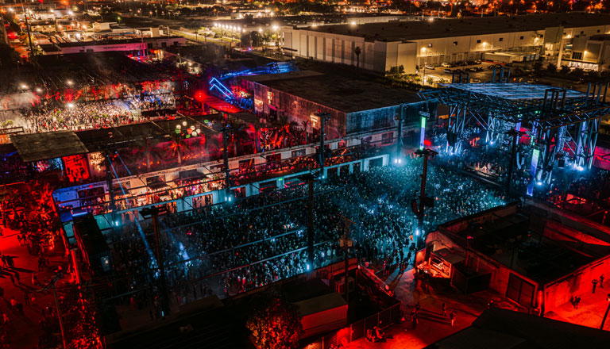
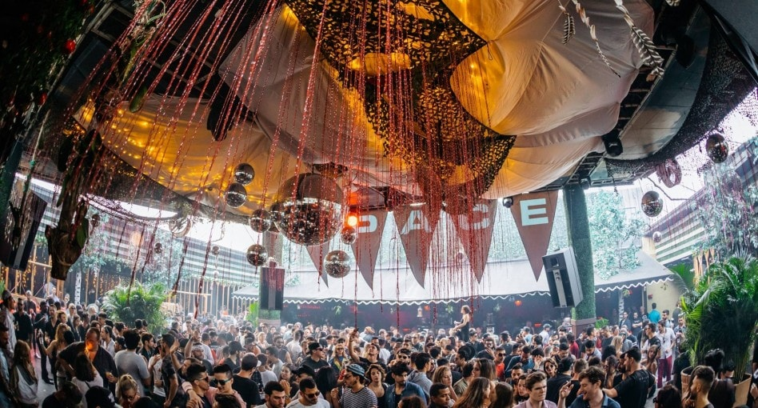
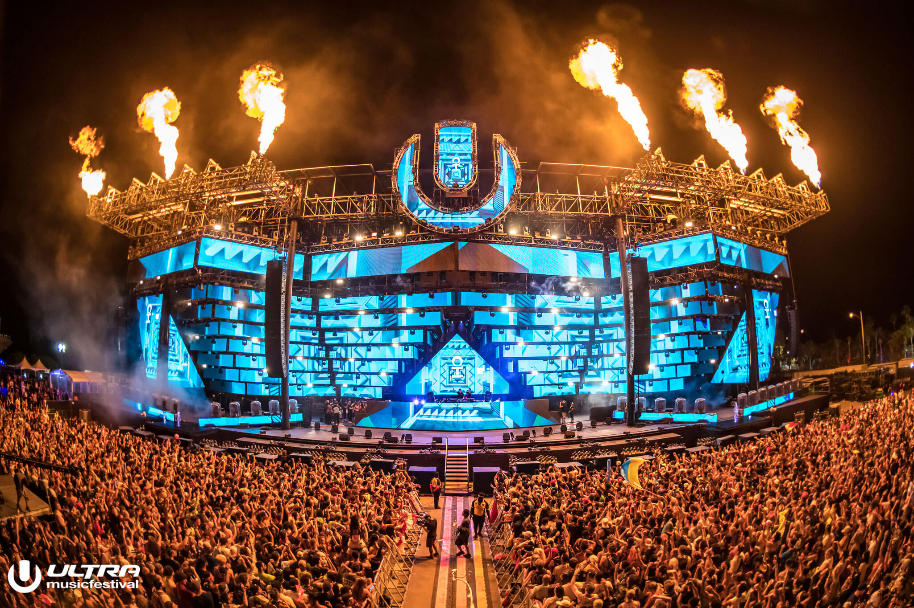
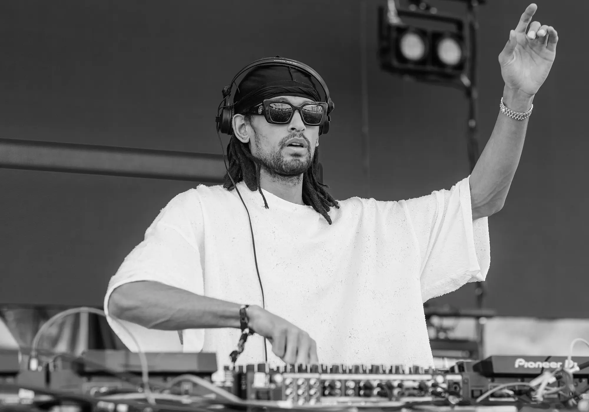
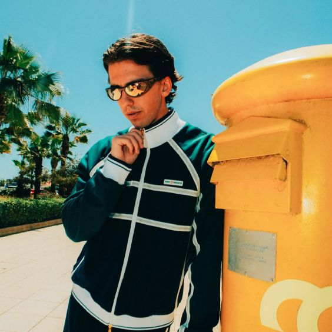
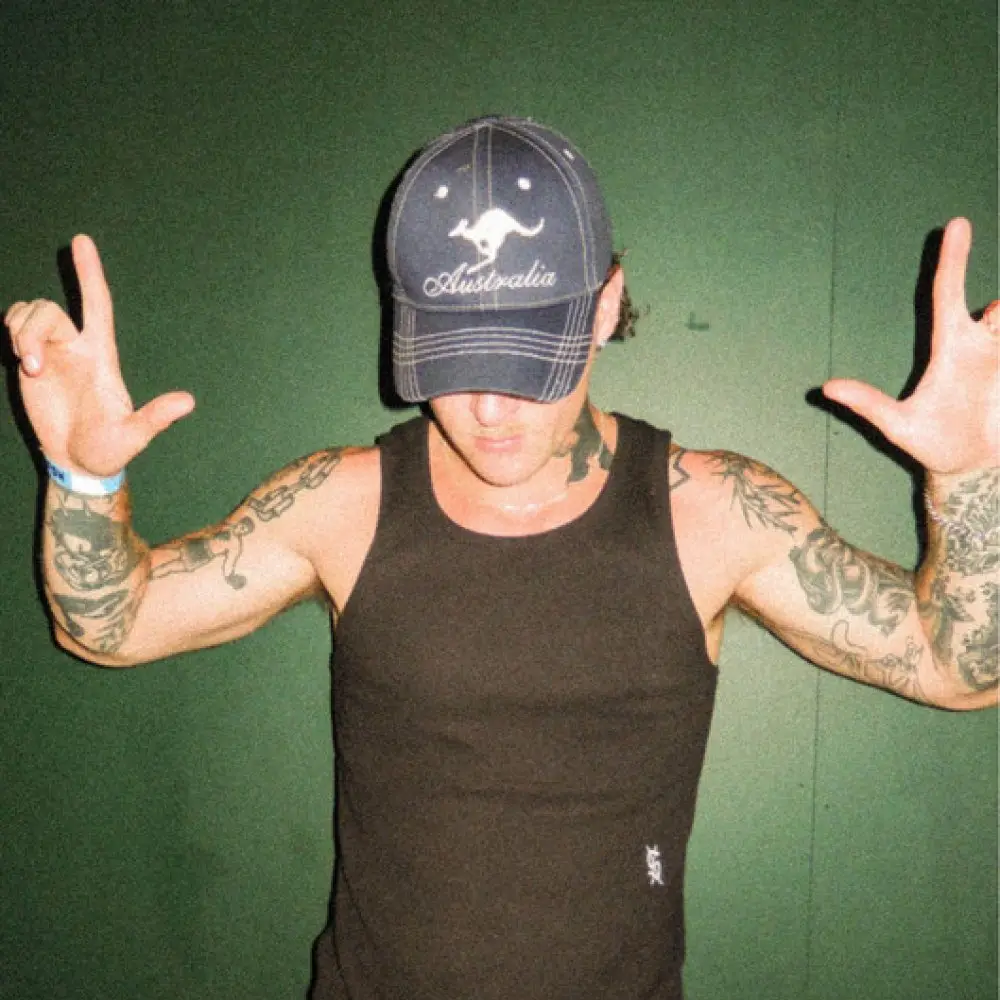
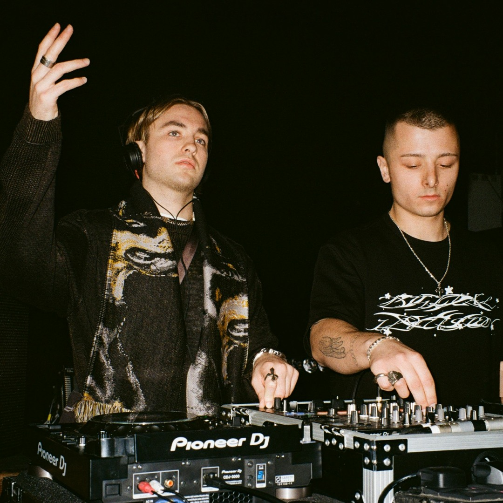
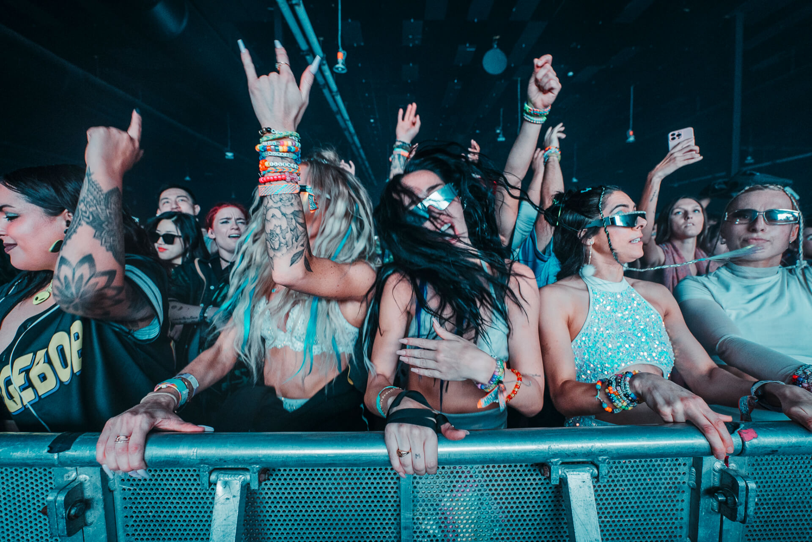
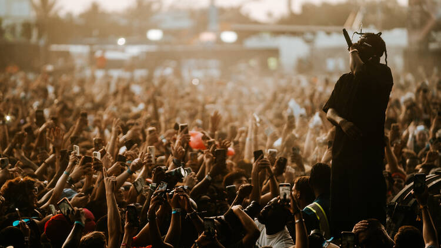
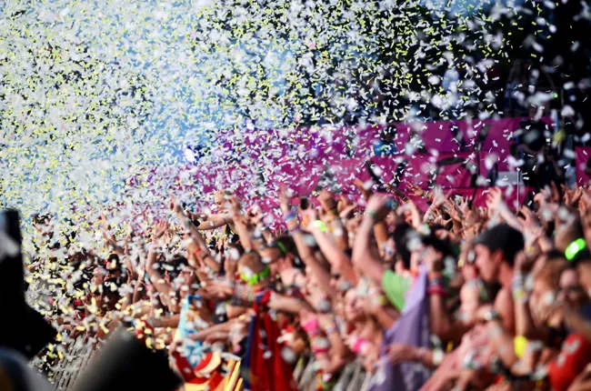

Factory Town
Underground vibes, immersive art, and nonstop house & techno.

Underground vibes, immersive art, and nonstop house & techno.

24-hour parties and legendary sunrise sets.

The biggest EDM festival in Miami.




Factory Town is one of the most unique venues during Miami Music Week, blending industrial warehouse energy with immersive art installations. The space transforms into a multi-room playground where each area offers a completely different musical experience.
Known for hosting underground house and techno collectives, Factory Town attracts a global crowd of music lovers looking for something more experimental and raw. The lighting, visuals, and stage design create an atmosphere that feels both chaotic and magical.
From sunrise sets to late-night sessions, the venue never truly slows down. It’s a place where music, art, and culture collide, making it one of the most talked-about destinations of the week.
Club Space is legendary in Miami’s nightlife scene, especially during Music Week. Famous for its marathon parties, the club stays open well into the next day, with DJs playing extended sets that evolve with the crowd.
The terrace is the heart of the experience, where sunrise and sunset sets create unforgettable moments. As the sky changes color, so does the energy of the music, making every visit feel different.
With world-class DJs and a loyal following, Club Space represents the essence of Miami’s electronic music culture—unfiltered, energetic, and always alive.
Ultra Music Festival is the centerpiece of Miami Music Week, drawing massive crowds from around the world. Held in a stunning outdoor location, the festival features huge stages, cutting-edge production, and globally recognized artists.
From EDM to techno and everything in between, Ultra offers a diverse lineup that caters to all electronic music fans. The visuals, pyrotechnics, and sound design create an electrifying atmosphere unlike any other event.
It’s more than just a festival—it’s a cultural moment. Ultra defines the scale and excitement of Miami Music Week and continues to be one of the most iconic music festivals in the world.


